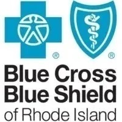

Work Experiences

IT System Operations Intern at Blue Cross Blue Shield of RI
- Completed and documented 400+ tickets consisting of hardware/software issues, onboarding requests, and computer/mobile device setup
- Managed 250+ users through Azure AD and CRM
- Configured and maintained printers, handsets, Windows/Apple laptops and desktops across 9 offices
Technology Support Specialist at Residential Properties Ltd.
- Processed and documented 350+ user on-boarding requests
- Managed IT Operations mailbox to ensure requests are completed in timely manner
- Installed 10+ Dolby Voice Audio devices with BlueJeans in conference rooms
- Assembled and imaged 400+ laptops for end users for laptop refresh project